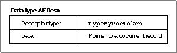
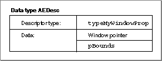

Legacy Document
Important: The information in this document is obsolete and should not be used for new development.
Important: The information in this document is obsolete and should not be used for new development.


Defining Tokens
It is up to you to decide how many token descriptor types you need to define for your application. In many cases you may be able to define one token that can identify Apple event objects of several different object classes, such as a token of typetypeMyTextTokenthat identifies Apple event objects of object classescText,cWord,cItem, andcChar. In other cases you may need to define specific token descriptor types for specific object classes.For example, the
MyFindDocumentObjectAccessorroutine shown in Listing 6-5 on page 6-36 returns a token of descriptor typetypeMyDocToken, which identifies a document record.
CONST {application-defined token} typeMyDocToken = 'docr'; {identifies a document record}Figure 6-5 shows the logical arrangement of a descriptor record of descriptor typetypeMyDocTokenwhose data is specified by a pointer to a document record.Figure 6-5 Descriptor record for an application-defined token that identifies a document

The
MyFindPropertyOfWindowObjectAccessorroutine shown in Listing 6-9 returns a token of descriptor typetypeMyWindowPropfor every property that it can locate.
CONST {application-defined token} typeMyWindowProp = 'wprp'; {a window pointer and a } { property ID}Figure 6-6 shows the logical arrangement of a descriptor record of descriptor typetypeMyWindowPropthat identifies the bounds property of a window. Its data consists of a window pointer and the constantpBounds. The application can use this token either to return or to change the window's bounds setting, depending on the Apple event that specified the property. If the token specifiedpNameinstead, the application could use it either to return the window's name as a string or to change the window's name.Figure 6-6 Descriptor record for an application-defined token that identifies the
pboundsproperty of a window
A token's data should always contain a reference to the corresponding Apple event objects--not a copy of the data for those objects. This allows the same token to be used for both reading and writing tokens.
It's often possible to use the same token type for objects of several object classes, or for both an object of a given class and one of its properties. A token's data is private to your application and can be organized in any way that is convenient.
When an object accessor function that supports key form
formRangelocates a range of Apple event objects, it should normally return a descriptor list (AEDescList) of tokens for the individual objects. A typical exception is an object accessor function that returns a range of objects of classcText, which should return a single token representing the entire range. For example, an object accessor function that finds "all the characters from char 1 to char 1024" should return a token that consists of a list of 1024 objects, each of classcChar, whereas an object specifier function that finds "all the text from char 1 to char 1024" should return a single token for a single item of classcTextthat is 1024 characters long.A token is valid only until the Apple Event Manager has located the requested element in the container the token represents and returned another token for the element. The Apple Event Manager disposes of intermediate tokens after it finishes resolving an object specifier record, but one token is always left over--the token that identifies the specified Apple event object or objects. Your application should dispose of this final token by calling the
AEDisposeTokenfunction, which in turn calls your application's token disposal function (if one exists), an optional object callback function that disposes of a token. See page 6-111 for the declaration of a token disposal function.If your application does not provide a token disposal function, the Apple Event Manager uses the
AEDisposeDescfunction to dispose of tokens. This function does the job as long as disposing of tokens involves nothing more than simply disposing of a descriptor record. Otherwise, you need to provide a custom token disposal function. For example, suppose the data field of a token descriptor record contains a handle to a block that in turn contains references to memory for the Apple event object referred to by the token. In this case, the application should provide a token disposal function that performs the tasks required to dispose of the token and any associated structures.